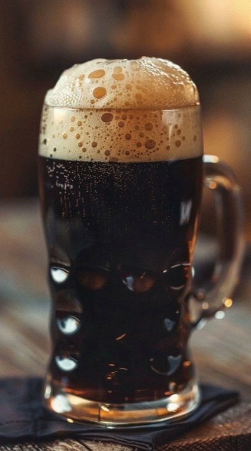

ГИД GYM BEER · КИШИНЁВ
При какой температуре подавать каждое пиво
Миф о том, что «пиво должно быть ледяным», работает только для самых лёгких лагеров. Слишком сильный холод «закрывает» аромат хмеля и жжёного солода. Вот точный гид по температуре.

3–5 °C: Лёгкие освежающие лагеры (Corona Extra, Estrella Galicia)
Максимально освежают именно сильно охлаждёнными.
4–7 °C: Пилснер, Хеллес и Пшеничное (HOLZ, Kozel Světlý, 1664 Blanc)
Сохраняют свежесть, но уже позволяют почувствовать мягкий солод, банан в Weissbier и цитрусы в 1664 Blanc.
6–10 °C: IPA, Тёмный лагер, Стаут и Портер (HOLZ IPA, Kozel Černý, Guinness, Porter)
Именно при 6–10 °C полностью раскрываются цитрусы IPA и кофейно-шоколадные ноты тёмных сортов.
Краткое сравнение
| Стиль пива | Оптимальная температура | Примеры в GYM BEER |
|---|---|---|
| Лёгкий лагер | 3–5 °C | Corona Extra, Estrella Galicia, London Beer |
| Пилснер и Хеллес | 4–6 °C | HOLZ Munich Helles, Götter Pilsner, Kozel Světlý |
| Пшеничное / Witbier | 5–8 °C | HOLZ Weissbier, Kronenbourg 1664 Blanc |
| IPA и APA | 6–8 °C | HOLZ IPA, Beermaster IPA, Götter Mosaic |
| Тёмное, Стаут, Портер | 6–10 °C | Kozel Černý, Guinness Draught, Porter |
Почему нельзя пить Guinness или Porter при 2 °C?
Слишком низкая температура скрывает сложные ноты обжаренного кофе, тёмного шоколада и карамели.
Где попробовать эти сорта в Кишинёве?
В магазинах GYM BEER на Ботанике (бул. Куза Водэ 1/4) и Буюканах (ул. Алба Юлия 23/2), ежедневно 10:00–22:00.
Другие полезные гиды: Живое нефильтрованное vs фильтрованное пиво · Helles vs Pilsner vs IPA и Weissbier · 5 правил, как сохранить разливное пиво в ПЭТ свежим · Как выбрать свежую копчёную рыбу · Крафтовые пивоварни Молдовы: Holz, Beermaster и Götter